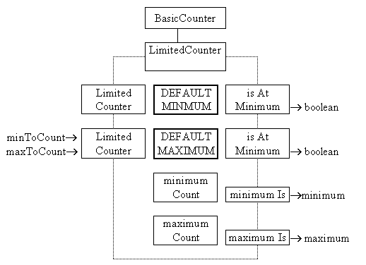

The LimitedCounter class
The LimitedCounter class is the first extension of the BasicCounter class and introduces the instance attributes which delineate the range through which the instance is able to count. It also provides actions to support these attributes but as it does not introduce any particular policy for an attempt to count or uncount beyond the range it is also implemented as an abstract class. Its class diagram is as follows.

The two class wide constant values DEFAULT_MINIMUM and DEFAULT_MAXIMUM are used to supply values for the instance attributes minimumCount and maximumCount if the default constructor is used. The alternative constructor uses the values supplied as arguments to delineate the range. Two enquiry actions are supplied for each instance attribute: one to determine if the instance is at the limit of the range and one to determine the actual limit of the range.
There is a danger here that the impression will be given that there must always be a constructor and an alternative constructor, this will be invalidated later but might be worth mentioning at this stage. It also reinforces the consideration that an object is more than a wrapper for a single primitive instance. The absence of setMaximumTo() and setMinimumTo() actions prevent the impression that get() and set() actions must always be provided for all attributes.